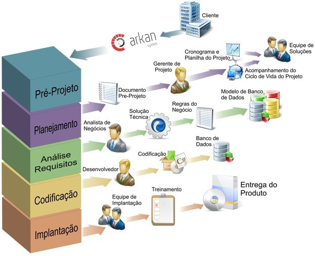
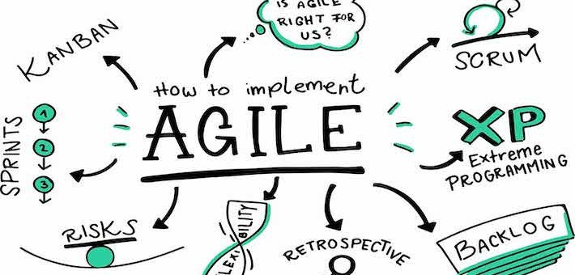
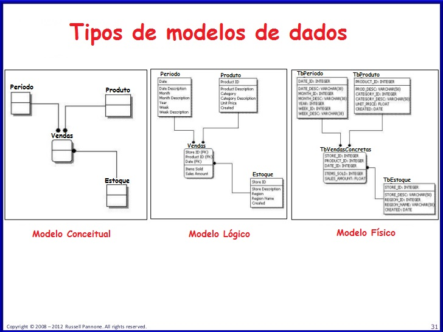

O que é Engenharia de Software?
Engenharia de Software é a disciplina que se preocupa com todos os aspectos do desenvolvimento de software, desde a concepção do projeto até a manutenção e evolução do software. O objetivo é produzir software de qualidade, que atenda às necessidades dos usuários e seja entregue no prazo e dentro do orçamento previsto.
Processos de Desenvolvimento de Software
Os processos de desenvolvimento de software incluem diversas etapas, como planejamento, análise, design, implementação, teste e manutenção. Cada etapa é importante e deve ser realizada com cuidado para garantir a qualidade do software.
Metodologias Ágeis
As metodologias ágeis são abordagens de desenvolvimento de software que priorizam a entrega rápida de software funcional e a colaboração entre os membros da equipe. As metodologias mais populares incluem Scrum, Kanban e XP.
Exemplos Práticos
Existem muitos tipos de projetos de software, desde aplicativos móveis até sistemas de gerenciamento de banco de dados. Aqui estão alguns exemplos de projetos de software:
- Sistema de gerenciamento de estoque
- Aplicativo de delivery de comida
- Sistema de gerenciamento de finanças pessoais
Testes de Software
Os testes de software são essenciais para garantir a qualidade do software. Existem diversos tipos de testes, como testes de unidade, testes de integração, testes de aceitação e testes de desempenho.
Manutenção de Software
A manutenção de software é a atividade que visa corrigir erros e falhas, melhorar o desempenho e adicionar novas funcionalidades ao software após a sua entrega. É uma atividade importante para garantir a satisfação dos usuários e a longevidade do software.
